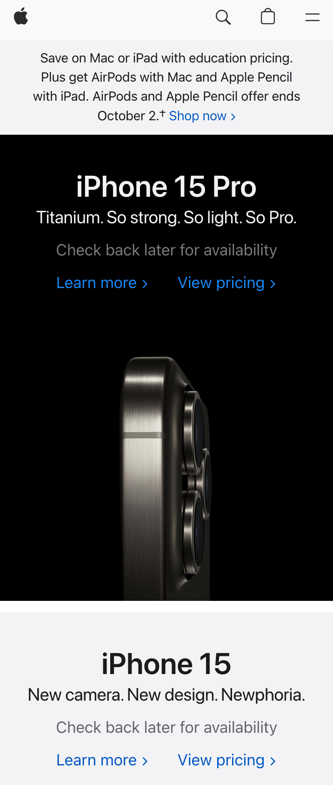
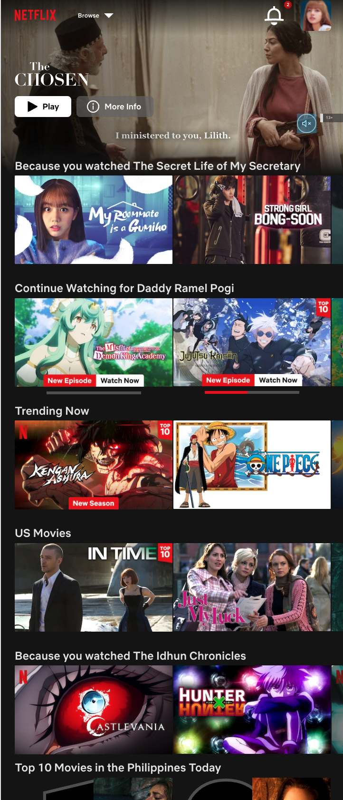
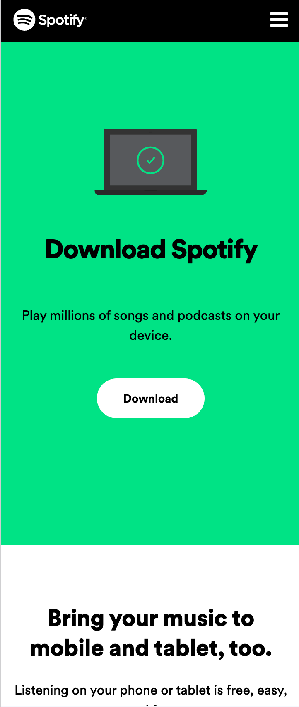

Visual Hierarchy
Apple
apple.com Since Virtual Hierarchy is the principle of arranging elements to show their order of importance, I think that the Apple Website has the most Visual Hierarchy out of all the websites I've been trying to look at. When you go to their page, you will see how they've executed a wonderful Visual Hierarchy! In my observation, I liked how you can easily see their photos and what kind of unit that photo is which makes it easier for viewers to know the information right in front of their faces.
Repetition
Netflix
netflix.com For the Repetition principle, I thought about the website of what we all love, Netflix. In their website, we can see the repetition of shapes they've used for the thumbnails of their website!
Contrast
Spotify
spotify.com When talking about Contrast, I loved how Spotify executed this principle on their website! They have dark colors but they still managed to make their website lively with the color green! It gives off the energy you need when listening to music!